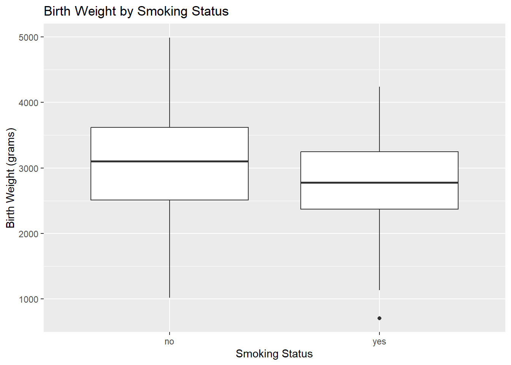
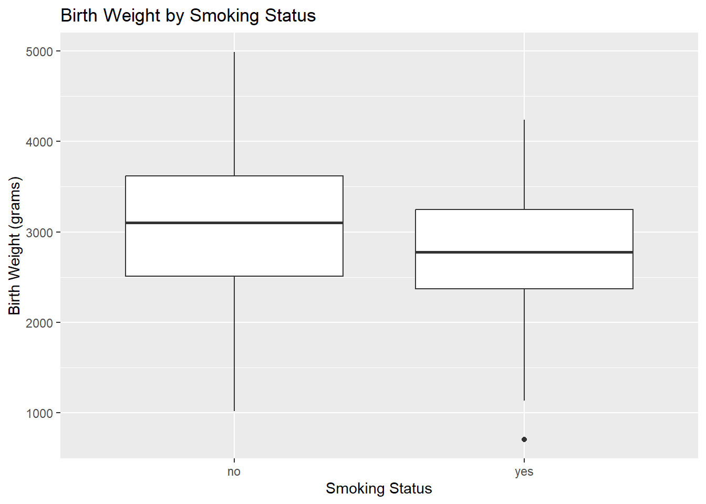
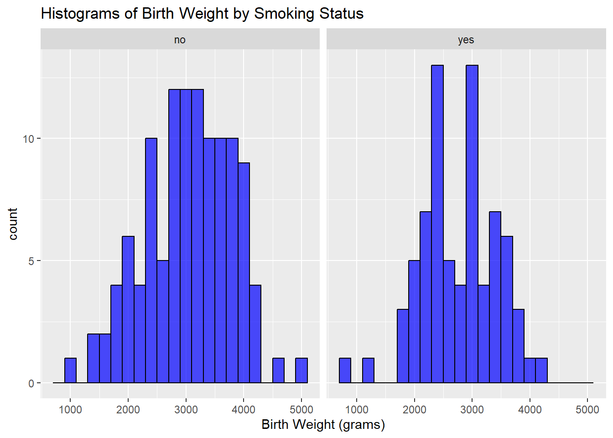
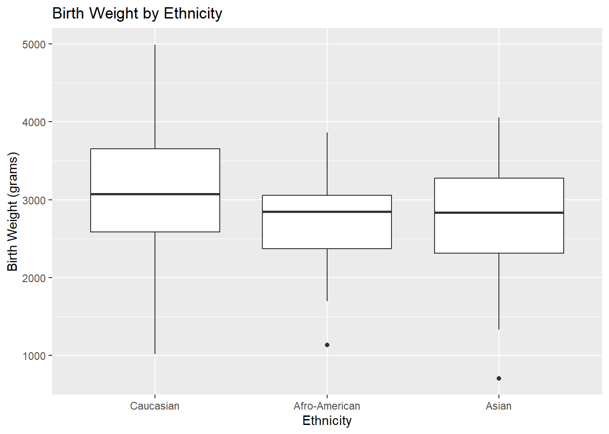
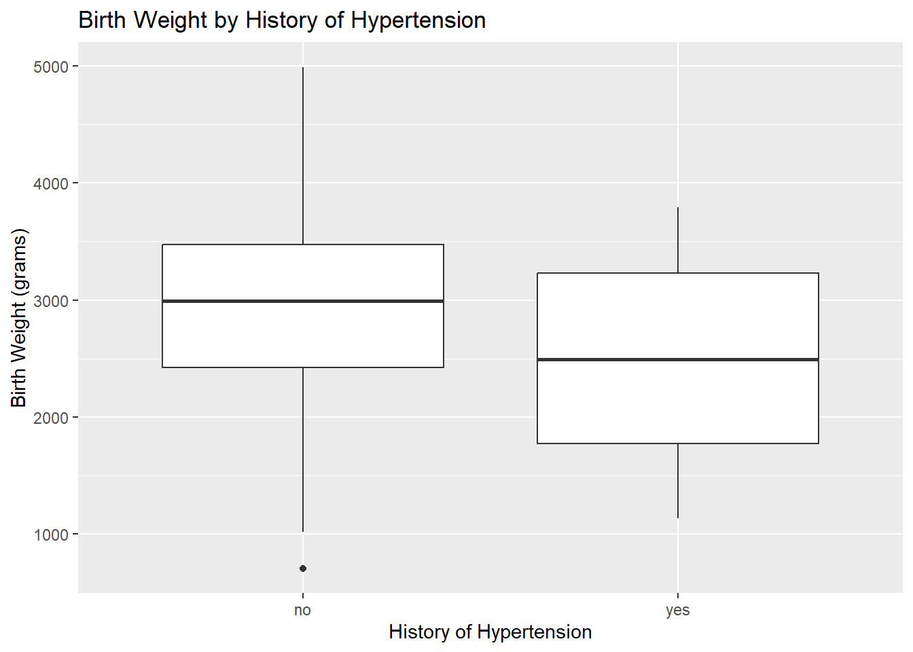
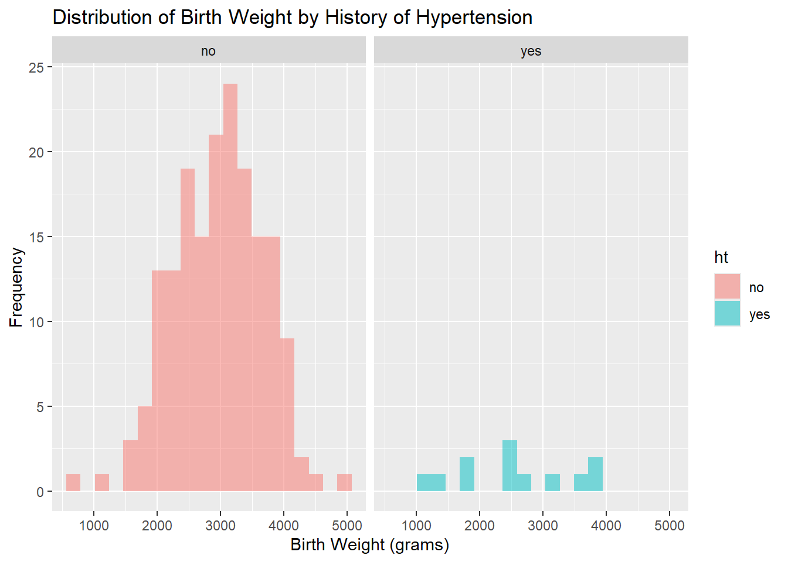
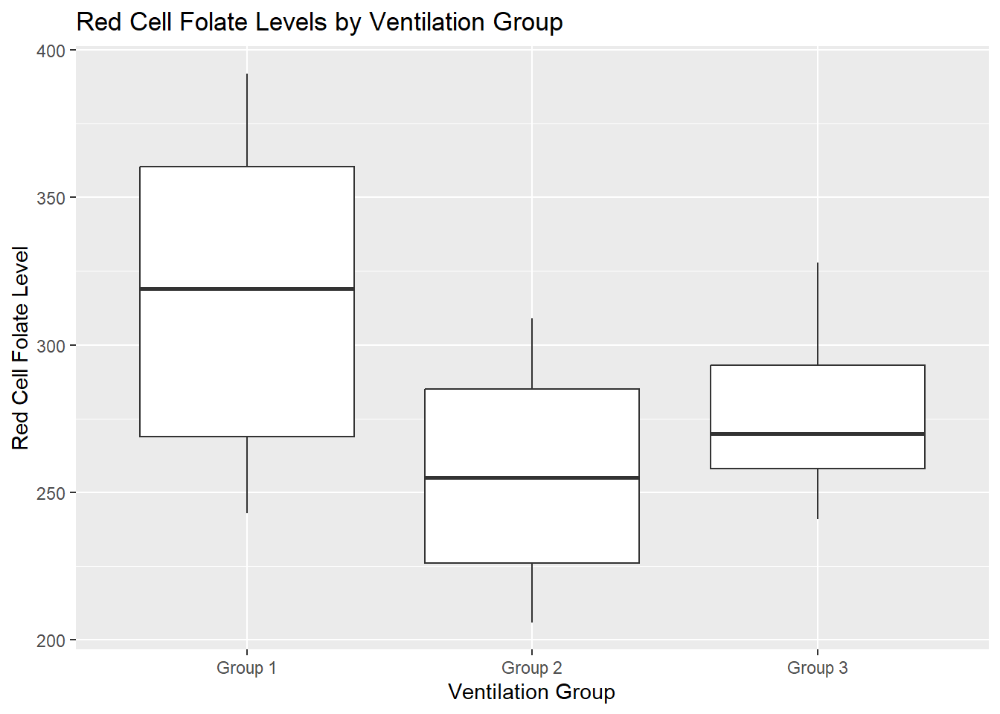

# Create boxplot comparing birth weights for mothers who smoked and those who did not
ggplot(lowbwt, aes(x = smoke, y = bwt)) +
geom_boxplot() +
labs(x = "Smoking Status", y = "Birth Weight (grams)", title = "Birth Weight by Smoking Status")
# Create boxplot comparing birth weights for mothers who smoked and those who did not
ggplot(lowbwt, aes(x = smoke, y = bwt)) +
geom_boxplot() +
labs(x = "Smoking Status", y = "Birth Weight (grams)", title = "Birth Weight by Smoking Status")
Based on the boxplot, do you expect the smoking status to have an effect on birth weight?
Based on the boxplot, it appears that mothers who smoked have lower birth weights on average compared to those who did not smoke. This suggests that smoking status may indeed have an effect on birth weight.
# Perform independent samples t-test
independent_t_test <- t.test(bwt ~ smoke, data = lowbwt, var.equal = TRUE)
# Print results
print(independent_t_test)
Two Sample t-test
data: bwt by smoke
t = 2.6336, df = 187, p-value = 0.009156
alternative hypothesis: true difference in means between group no and group yes is not equal to 0
95 percent confidence interval:
70.69274 492.73382
sample estimates:
mean in group no mean in group yes
3054.957 2773.243 Based on the results of the independent samples t-test, is there a statistically significant difference in birth weight between mothers who smoked and those who did not?
The p-value of the independent samples t-test (p=0.009) is less than 0.05, which indicates that there is a statistically significant difference in the mean birth weight between mothers who smoked and those who did not.
# Create histograms of birth weight by smoking status
ggplot(lowbwt, aes(x = bwt)) +
geom_histogram(binwidth = 200, fill = "blue", colour="black", alpha = 0.7) +
facet_wrap(~smoke) +
labs(x = "Birth Weight (grams)", title = "Histograms of Birth Weight by Smoking Status")
Do the histograms indicate that the birth weight data are approximately normally distributed for both groups?
Based on the histograms, the distributions in both groups appear reasonably normal for the purposes of conducting an independent samples t-test.
# Perform Levene's test for homogeneity of variances
levene_test <- leveneTest(bwt ~ smoke, data = lowbwt)
levene_testLevene's Test for Homogeneity of Variance (center = median)
Df F value Pr(>F)
group 1 1.3901 0.2399
187 Based on the Levene test, does the assumption of equal variances hold?
The p-value of the Levene test (p = 0.2399) is greater than 0.05, indicating insufficient evidence to reject the null hypothesis of equal variances. Therefore, we can assume that the assumption of equal variances holds.
# Calculate summary statistics by smoking status
summary_stats <- lowbwt %>%
group_by(smoke) %>%
summarise(mean = mean(bwt), sd = sd(bwt), n = n())
summary_stats# A tibble: 2 × 4
smoke mean sd n
<fct> <dbl> <dbl> <int>
1 no 3055. 752. 115
2 yes 2773. 660. 74Based on these summary statistics, calculate the pooled standard deviation and the standard error of the mean difference. Then compute the 95% confidence interval for the mean difference in birth weight between mothers who smoked and those who did not. You may simplify the calculation by using the 97.5th percentile from the standard normal distribution (1.96) rather than the corresponding percentile from the t-distribution.
Pooled Standard Deviation
The pooled standard deviation is calculated using the formula:
\[
s_p = \sqrt{\frac{(n_{no} - 1) \cdot s_{no}^2 + (n_{yes} - 1) \cdot s_{yes}^2}{n_{no} + n_{yes} - 2}}
\] Substituting the values:
\[
s_p = \sqrt{\frac{(115 - 1) \cdot 752^2 + (74 - 1) \cdot 660^2}{115 + 74 - 2}} = 717.49
\]
Standard Error of the Mean Difference
The standard error (SE) of the mean difference is calculated as:
\[
SE = s_p \cdot \sqrt{\frac{1}{n_{no}} + \frac{1}{n_{yes}}}
\] Substituting the values:
\[
SE = 717.49 \cdot \sqrt{\frac{1}{115} + \frac{1}{74}} = 106.93
\]
Mean Difference
The difference in means between the groups is:
\[
\text{Mean Difference} = \bar{X}_{no} - \bar{X}_{yes} = 3055 - 2773 = 282
\]
95% Confidence Interval
The confidence interval (CI) is calculated as:
\[
\text{CI} = \text{Mean Difference} \pm 1.96 \cdot SE
\] Substituting the values:
\[
\text{CI} = 282 \pm 1.96 \cdot 106.93 = (72.43, 491.57)
\]
Does your manually calculated 95% confidence interval for the mean difference in birth weight between the two groups agree with the one provided in the output of the t.test() function?
The manually calculated 95% confidence interval for the mean difference in birth weight between mothers who smoked and those who did not is (72.43, 491.57), is approximately equal to the one provided in the output of the t.test() function, wich is (70.69, 492.73). The latter is slightly wider due to the use of the 97.5 the percentile of the t-distribution with 187 degrees of freedom (1.97) rather than the standard normal distribution (1.96).
# Perform Mann-Whitney U test
wilcoxon_test <- wilcox.test(bwt ~ smoke, data = lowbwt)
wilcoxon_test
Wilcoxon rank sum test with continuity correction
data: bwt by smoke
W = 5243.5, p-value = 0.007109
alternative hypothesis: true location shift is not equal to 0What are the null and alternative hypotheses for the Mann-Whitney U test, and what does the p-value indicate about the difference in birth weight between mothers who smoked and those who did not?
The null hypothesis for the Mann-Whitney U test is that there is no difference in the median birth weight between mothers who smoked and those who did not. The alternative hypothesis is that there is a difference in median birth weight between the two groups. The p-value of the test is 0.0071, which is less than 0.05. Therefore, we reject the null hypothesis and conclude that there is a statistically significant difference in median birth weight between mothers who smoked and those who did not.
# Create boxplot comparing birth weights across ethnic groups
ggplot(lowbwt, aes(x = ethnicity, y = bwt)) +
geom_boxplot() +
labs(x = "Ethnicity", y = "Birth Weight (grams)", title = "Birth Weight by Ethnicity")
What does the boxplot suggest about the distribution of birth weights across different ethnic groups?
The boxplot suggests that there may be differences in birth weight across the three ehtnic groups. More specifically, The mean birth weight appears to be higher for the Causasian group compared to the Afro-American and Asian groups.
# Perform One-Way ANOVA
anova_result <- aov(bwt ~ ethnicity, data = lowbwt)
# Print summary of ANOVA
summary(anova_result) Df Sum Sq Mean Sq F value Pr(>F)
ethnicity 2 5070608 2535304 4.972 0.00788 **
Residuals 186 94846445 509927
---
Signif. codes: 0 '***' 0.001 '**' 0.01 '*' 0.05 '.' 0.1 ' ' 1What conclusions can be drawn from the results of the one-way ANOVA?
The p-value from the one-way ANOVA (p=0.0079) is less than 0.05, indicating that there is at least one ethic group with a significantly different birth weight.
# Perform pairwise comparisons with Bonferroni correction
posthoc <- pairwise.t.test(lowbwt$bwt, lowbwt$ethnicity, p.adjust.method = "bonferroni")
posthoc
Pairwise comparisons using t tests with pooled SD
data: lowbwt$bwt and lowbwt$ethnicity
Caucasian Afro-American
Afro-American 0.048 -
Asian 0.027 1.000
P value adjustment method: bonferroni What conclusions can be drawn from the post-hoc comparisons?
It follows from the post-hoc comparisons with the Bonferroni-adjusted p-values that the mean birth weight of Caucasian infants is significantly different from that of Afro-American infants (p=0.048) and Asian infants (p=0.027). There is no significant difference in mean birth weight between Afro-American and Asian infants (p=1).
If the assumptions of the one-way ANOVA are violated, we can use the Kruskal-Wallis test as a non-parametric alternative. The test can be performed in R using the kruskal.test() function:
# Perform Kruskal-Wallis test
kruskal_test <- kruskal.test(bwt ~ ethnicity, data = lowbwt)
kruskal_test
Kruskal-Wallis rank sum test
data: bwt by ethnicity
Kruskal-Wallis chi-squared = 8.5909, df = 2, p-value = 0.01363Are the results of the Kruskal-Wallis test consistent with the one-way ANOVA results?
The p-value from the Kruskal-Wallis test (p=0.014) is consistent with the one-way ANOVA results, indicating that there is at least one ethnic group with a significantly different median birth weight.
Examine the effect of history of hypertension on birth weight by performing the following steps:
# Create boxplot comparing birth weights by history of hypertension
ggplot(lowbwt, aes(x = ht, y = bwt)) +
geom_boxplot() +
labs(x = "History of Hypertension", y = "Birth Weight (grams)", title = "Birth Weight by History of Hypertension")
# Perform independent samples t-test
t_test <- t.test(bwt ~ ht, data = lowbwt, var.equal = TRUE)
t_test
Two Sample t-test
data: bwt by ht
t = 2.0192, df = 187, p-value = 0.04489
alternative hypothesis: true difference in means between group no and group yes is not equal to 0
95 percent confidence interval:
10.02413 861.09734
sample estimates:
mean in group no mean in group yes
2972.311 2536.750 # Create histograms to check normality
ggplot(lowbwt, aes(x = bwt, fill = ht)) +
geom_histogram(position = "identity", alpha = 0.5, bins = 20) +
facet_wrap(~ht) +
labs(x = "Birth Weight (grams)", y = "Frequency", title = "Distribution of Birth Weight by History of Hypertension")
# Perform Levene's test for homogeneity of variances
levene_test <- leveneTest(bwt ~ ht, data = lowbwt)
levene_testLevene's Test for Homogeneity of Variance (center = median)
Df F value Pr(>F)
group 1 1.2851 0.2584
187 Evaluation of the results: Although the p-value from the independent samples t-test suggests that there is no statistically significant difference in birth weight between mothers with and without a history of hypertension, the group sizes are highly imbalanced (177 vs. 12). This imbalance reduces the reliability of the t-test results and may limit its power to detect true differences. Additionally, the small sample size in the hypertension group makes it harder to assess assumptions such as normality. To check the robustness of the findings, we also conduct the Mann-Whitney U test as a non-parametric alternative.
Wilcoxon rank sum test with continuity correction
data: bwt by ht
W = 1350, p-value = 0.1169
alternative hypothesis: true location shift is not equal to 0Overall conclusion: Both the independent samples t-test and the Mann-Whitney U test suggest that there is no statistically significant difference in birth weight between mothers with and without a history of hypertension. This consistency across methods supports the robustness of the findings, despite the imbalance in group sizes.
Twenty-two patients undergoing cardiac bypass surgery were randomized to one of three ventilation groups:
The data file ex5_6.sav (available on Brightspace) contains the red cell folate levels for the three groups after 24 hours of ventilation. The aim of this study is to compare the three groups and test whether they have the same red cell folate levels.

The groups seem to be different with respect to their means, but also with respect to their variation (range has different length)
Df Sum Sq Mean Sq F value Pr(>F)
group 2 15516 7758 3.711 0.0436 *
Residuals 19 39716 2090
---
Signif. codes: 0 '***' 0.001 '**' 0.01 '*' 0.05 '.' 0.1 ' ' 1Levene's Test for Homogeneity of Variance (center = median)
Df F value Pr(>F)
group 2 3.6413 0.04585 *
19
---
Signif. codes: 0 '***' 0.001 '**' 0.01 '*' 0.05 '.' 0.1 ' ' 1The ANOVA reveals significant results P= 0.044; this means that the null hypothesis of equal means in the three groups is rejected. However, according to the test of homogeneity of variances, the assumption of equal variances is violated (P-value = 0.044).
Df Sum Sq Mean Sq F value Pr(>F)
group 2 0.1784 0.08922 3.539 0.0494 *
Residuals 19 0.4790 0.02521
---
Signif. codes: 0 '***' 0.001 '**' 0.01 '*' 0.05 '.' 0.1 ' ' 1Levene's Test for Homogeneity of Variance (center = median)
Df F value Pr(>F)
group 2 1.889 0.1785
19 The test of equal variances for the log-transformed data reveals that the assumption of equal variances can be made. Test results for the ANOVA: P-value = 0.049. This is on the boundary of significance. There is indication that at least one pair of groups have different means.
Pairwise comparisons using t tests with pooled SD
data: df$rcfl and df$group
Group 1 Group 2
Group 2 0.042 -
Group 3 0.464 1.000
P value adjustment method: bonferroni
Pairwise comparisons using t tests with pooled SD
data: df$log_rcfl and df$group
Group 1 Group 2
Group 2 0.047 -
Group 3 0.597 1.000
P value adjustment method: bonferroni From the paired comparisons with Bonferroni-corrections it appears that group1 and group 2 differ significantly with respect to their means (but on the boundary, P-value = 0.047).
Kruskal-Wallis rank sum test
data: rcfl by group
Kruskal-Wallis chi-squared = 4.1852, df = 2, p-value = 0.1234The Kruskal-Wallis test gives P-value = 0.123, indicating that there are no significant differences between the three groups.
In this example, the sample size is very limited, making it difficult — if not impossible — to verify whether the assumptions underlying the one-way ANOVA are met. The Kruskal-Wallis test is a good alternative in such cases.